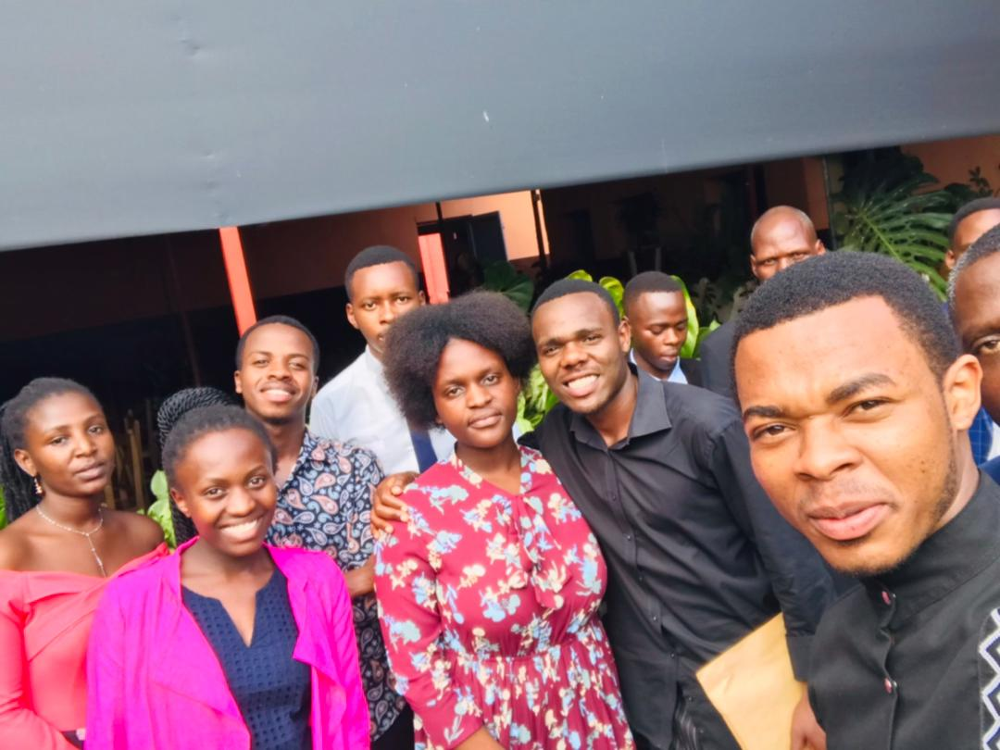
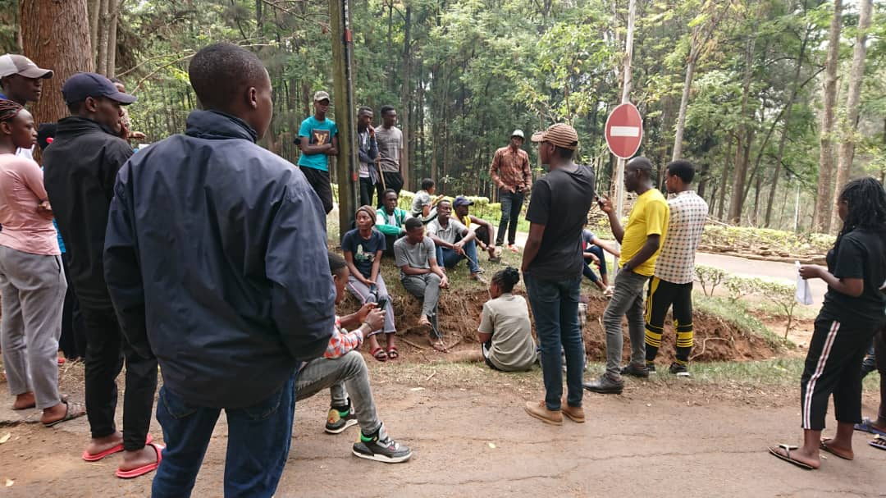
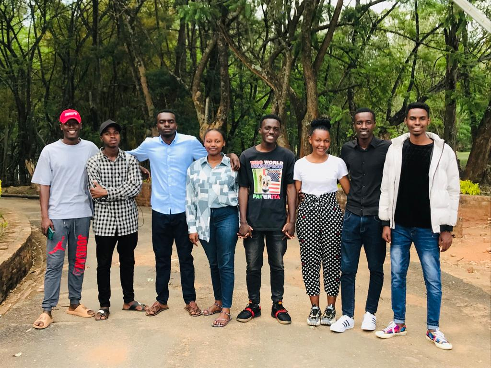

What We Concern
Forestry is the science and craft of creating, managing, using, conserving, and repairing forests, woodlands, and associated resources for human and environmental benefits.
Forestry is practiced in plantations and natural stands. The science of forestry has elements that belong to the biological, physical, social, political and managerial sciences.
Forests cover nearly a third of all land on Earth, providing vital organic infrastructure for some of the planet’s densest, most diverse collections of life. They support countless species, including our own, yet we often seem oblivious of that. Humans now clear millions of acres from natural forests every year, especially in the tropics, letting deforestation threaten some of Earth’s most valuable ecosystems.
Modern forestry generally embraces a broad range of concerns, in what is known as multiple-use management, including the provision of timber, fuel wood, wildlife habitat, natural water quality management, recreation, landscape and community protection, employment, aesthetically appealing landscapes, biodiversity management, watershed management, erosion control, and preserving forests as “sinks” for atmospheric carbon dioxide.
A practitioner of forestry is known as a forester. Other common terms are: a verderer, or a silviculturalist. Silviculture is narrower than forestry, being concerned only with forest plants, but is often used synonymously with forestry.
I am Lilian UWAJENEZA, after reading the contents of this website, I felt so excited.

My names are Stacy Lorenzo, I am a Forest Engeneer. We are together to create a better world by fighting grobal warming and environmental dramatic change.
Projects
Modern forestry generally embraces a broad range of concerns, in what is known as multiple-use management, including the provision of timber, fuel wood, wildlife habitat, natural water quality management, recreation, landscape and community protection, employment, aesthetically appealing landscapes, biodiversity management, watershed management, erosion control, and preserving forests as “sinks” for atmospheric carbon dioxide.
A practitioner of forestry is known as a forester. Other common terms are: a verderer, or a silviculturalist. Silviculture is narrower than forestry, being concerned only with forest plants, but is often used synonymously with forestry.
Forest ecosystems have come to be seen as the most important component of the biosphere, and forestry has emerged as a vital applied science, craft, and technology.
Forestry is an important economic segment in various industrial countries. For example, in Germany, forests cover nearly a third of the land area, wood is the most important renewable resource, and forestry supports more than a million jobs and about €181 billion of value to the German economy each year.



Forests — made up of trees which naturally pull carbon dioxide (CO2) out of the atmosphere and store it in their wood, leaves, and roots — present one of the most cost-effective and scalable opportunities available today to sequester carbon. Recognizing the importance of forests for solving climate change, people around the world are creating projects to protect, restore, and improve the world’s forests.
These projects, called forest carbon projects or just forest projects, involve planned activities to manage forest land over many decades or more to increase forest carbon storage over business-as-usual projections. Forest projects finance restoration and conservation by selling carbon credits that each represent one tonne of CO2 captured or emissions avoided over expected baseline conditions. Organizations can purchase carbon credits to fund climate change solutions.
While there are many ways to categorize forest projects, at Pachama we generally classify projects into three groups:
Reforestation to plant new forests on land
Forest conservation to protect old growth forests from deforestation
Improved forest management to grow mature, well-stocked forests using sustainable harvest practices
Together, these three types of projects help protect and restore the world’s forests while balancing ecological, social and economic needs. Let’s take a closer look at the three types of forest projects on the platform to understand the benefits and drawbacks of each and why all three types are important.
We tend to take forests for granted, underestimating how indispensable they still are for everyone on the planet. That would quickly change if they all disappeared, but since humanity might not survive that scenario, the lesson wouldn’t be very useful by then. As the Once-ler finally realizes in Dr. Seuss’ “The Lorax,” a crisis like deforestation depends on indifference. “UNLESS someone like you cares a whole awful lot,” Seuss wrote, “nothing is going to get better. It’s not.”